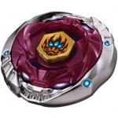

Phantom Orion B:D
| Phantom Orion B:D | |
|  | |
| Number: | BB-118 |
|---|---|
| System: | Metal Fight Beyblade |
| Type: | Stamina |
Contents
Face: Orion
The Face of this Beyblade depicts the Orion constellation, a mighty hunter in Greek Mythology.
4D Clear Wheel: Orion
- Weight: 3.0 grams
Orion is a four-sided 4D Clear Wheel that has two sharper contours and two broad edges. The two sharper sides of the 4D Clear Wheel represent the top of Orion's forehead, and create a distinct face when used in conjunction with Phantom. It contains the iron powder that all 4D Clear Wheels have. However, this does not add significant weight.
Use in Attack Customization
The Orion 4D Clear Wheel works well with the Flash 4D Metal Wheel in combinations such as MF-H Flash Orion GB145RF: Orion's weight distribution is synergetic with Flash's, while Orion's shape exposes Flash's contact points perfectly, its broader sides complimenting Flash's oval shape in Attack Mode.
4D Metal Wheel: Phantom
- Weight: 44.50 grams
Phantom is composed of both a Metal Frame and a Core. By removing and flipping the Metal Frame, Phantom can alternate between two modes: Stamina Mode and Attack Mode.
Metal Frame
- Weight: 42.0 grams
Phantom's Metal Frame makes up for most of Phantom's weight. It consists of two vastly different faces. The first one, facing up when Phantom is in Stamina Mode (henceforth known as the Stamina Face), displays Orion's figure--eyes, nose and grin--twice, as well as two identical long surfaces--smooth, but uneven--representing Orion's sword and scabbard. On each is engraved two shallow holes where stickers can be applied to depict a total of four blue stars, which, combined with Orion's Face's three blue flames, form the Orion constellation. The second face, the Attack Face, on the other hand, is a rough, but even, patterned surface, only broken by a single octagonal shape overlapping and sticking out of the otherwise circular Metal Wheel's shape.
Core
- Weight: 2.50 grams
Phantom's Core is a small piece of polycarbonate, roughly the size of a Clear Wheel. It features four small, upward protrusions that fit in the Metal Frame's four matching slot, locking the latter in place in either mode.
Phantom's modes, Stamina and Attack, are distinguished as followed:
- Stamina Mode
Stamina Mode is when the Metal Frame displays the Stamina Face, while the Attack Face faces the Stadium floor.
- Attack Mode
Stamina Mode is when the Metal Frame displays the Attack Face, while the Stamina Face faces the Stadium floor.
Generally, Phantom's Stamina Mode is preferred since this 4D Metal Wheel performs the best in top-tier Stamina combos and that its design is much smoother.
The Cancer, Orion and Hades Clear Wheels are considered to have the best synergy with Phantom, with Cancer being able to spin around 2 minutes longer than Aquario on it, another widely-used Stamina Clear Wheel.
Use in Stamina Customization
Phantom's Stamina Mode demonstrates the best endurance in combos such as Phantom Cancer W145WD or Phantom Cancer TH170/230D.
Use in Tornado Staller Customization
Phantom's Attack Mode has been shown to work well in the Tornado Staller combo MF-L Phantom Hades/Cancer 85MF, which circles the BeyStadium's Tornado Ridge until it gradually dives towards the center for a finishing strike. This combination is functional in large part due to Phantom's nearly unmatched characteristics: the combination of top-tier Stamina with enough Attack potential to deliver meaningful hits to weakened opponents.
Mold Variation: Hasbro Metal Fury Version
Like all of Hasbro's Metal Fury releases, Metal Fury Phantom's parts are fused into one piece, stuck in its default mode (Stamina Mode). What stands as the PC Core on the original version is made completely out of metal. However, the resulting increase in weight is offset by the hollowed underside of Metal Fury Phantom, which removes about ten grams from the wheel's total weight, a trait it shares with other Metal Fury Metal Wheels. This, combined with the reduced Flywheel Effect from the PC Core being made of metal, makes Phantom no better than Earth and Burn, which are completely outclassed, even in Hasbro BeyStadiums, by Basalt, Hell, and Hyperblade Phantom, amongst the good Stamina Metal Wheels distributed by Hasbro. The Metal Fury version of this 4D Metal Wheel is thoroughly useless. The original 4D version of Phantom has since then been made available to Hasbro Bladers through Hasbro's Hyperblade series.
4D Bottom: Bearing Drive (B:D)
| Weight: | 3.45 grams | Full Width: | mm | Tip Width: | mm | Full Height: | mm | Tip Height: | mm | Tip Angle: | 25° |
B:D has a unique, tall shape, and a height comparable to the TH170 (170 height) Track without a Bottom associated to the latter. It is also of a translucent yellow color which allows a faint view of the internal workings of the Bearings. This metal ball bearing mechanism allows the Beyblade to spin for long periods of time with minimal amounts of friction. Indeed, B:D paired with its release parts Phantom Orion is one of the only combinations able to spin up to 7 minutes.
Bearing Drive features, inside its plastic casing, a metal shaft connected to the middle of the 4D Bottom, a metal casing that is connected to the tip of B:D, and metal spheres in between them. Sometimes, the bearing is able to stop the shaft from spinning, resulting in less friction between the stadium floor and itself. These factors increase Stamina, but there exists many mold variations even within the same distributing company and general inconsistencies that can make this rarely happen. B:D's solo spin time often ranges between 2-5 minutes.
This interesting 4D Bottom reminescent of HMS' Bearing Cores however has considerable issues. Firstly, since all it focuses on is stamina, it remains very easy to knock out of the stadium, with its tip being similar to other vulnerable Stamina Bottoms such as WD. Secondly, while its height isn't a huge mistake and still allows the customization it is part of to be balanced with a decent center of gravity, the fact that this height is fixed becomes a disadvantage against the more varied assortments of Attack combinations.
Use in Stamina Customization
While B:D has many issues in a BeyStadium Attack Type, it has proven to work extremely well in Zero-G Stadiums, such as the combo Gargole/Revizer/Killerken Dragooon B:D. In fact, B:D does not appear to suffer the same vulnerability issues as in the traditional metagame, due to Zero-G's wild, swaying gimmick that give new angles of stadiums for B:D to embrace.
Other Versions
- Phantom Orion B:D Skeleton Ver. - CoroCoro Magazine (Translucent White with Black Metal Frame)
- Phantom Orion B:D - Legend Beyblade Set (Gold with black Clear Wheel and Face)
- Phantom Orion 145ES - Hasbro Metal Fury (Printed Face, yellow Track and Bottom)
- Phantom Orion B:D - Hasbro Hyperblade Series (Printed Face, orange and green Clear Wheel, orange Metal Wheel Core, opaque Track)
Gallery
-
Phantom Orion B:D parts
-
Phantom Orion Box Front view
-
Phantom Orion Box Back view
-
Phantom Orion Box Front View (Hasbro ver.)
-
Phantom Orion Box Back View (Hasbro ver.)
Overall
Phantom Orion B:D is an extremely versatile Beyblade that contains many useful parts: Phantom's Stamina is roughly equal to that of Duo, albeit performing better in different competitive situations; B:D is considered one of the best parts to use in Zero-G Stadiums, especially with beginners. Every Blader should own at least one of this Beyblade.